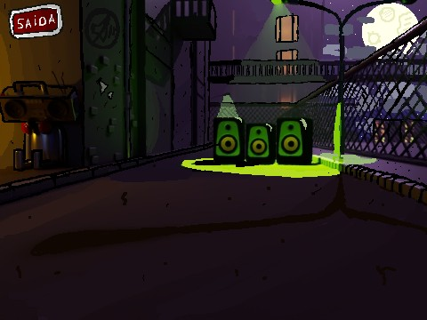
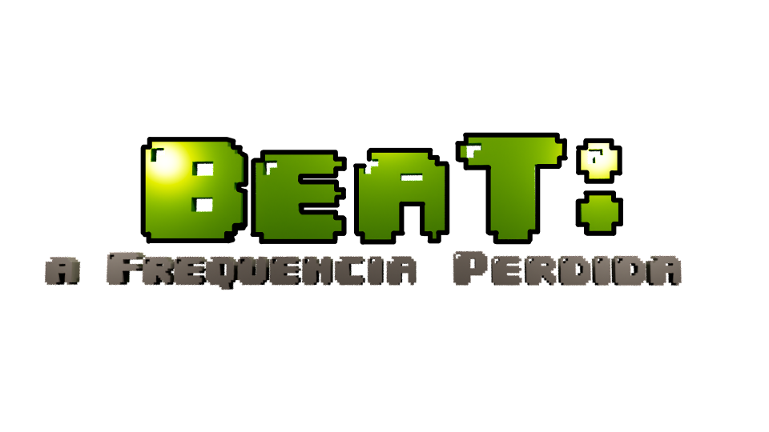
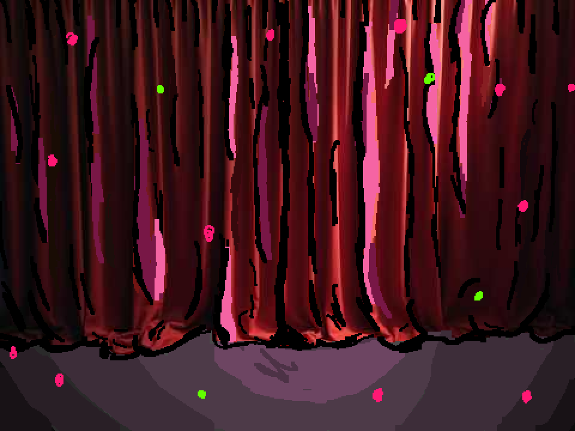
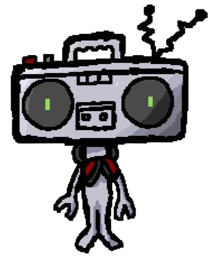
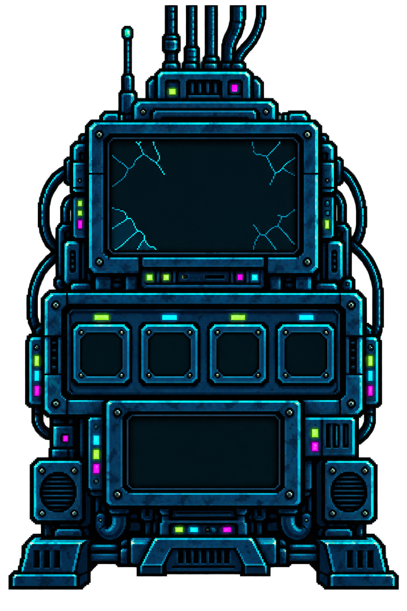
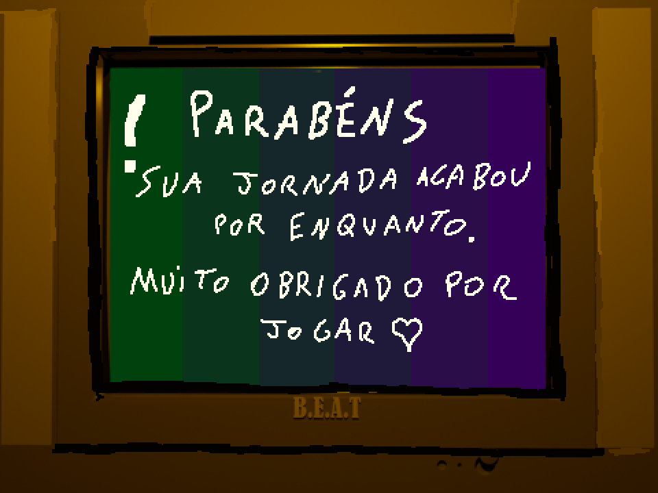

Recupere o som. Salve a cidade.
FASE 01
Fugindo do silêncio
Tentativas: 3/3Fragmentos: 0/330 s
FASE 01
Fugindo do silêncio
Desvie das ondas por 30 segundos.
Use as setas ← → / ↓ ↑ para mover o Beat
FASE 01
Você perdeu suas 3 tentativas :|
FASE 02
Recuperando o ritmo
Notas: 0/5Fragmentos:
1/3Tentativas: 3/330
s
FASE 02
Recuperando o ritmo
Pegue as 5 notas musicais que se movem pela cidade.
Você tem 30 segundos, seja rápido!
BEAT / FREQUÊNCIA PERDIDA

FASE 03
Consertando o sistema
Tentativas: 3/3Fragmentos: 2/3


Central
musicalOffline
FASE 03
Consertando o sistema
Observe as luzes e memorize a ordem das notas.
São 3 sequências para os circuitos
BEAT / FREQUÊNCIA PERDIDA
FASE 01 CONCLUÍDA
O ritmo voltou. Vamos à central!
Vamos seguir para a fase 2 e restaurar o sistema de som.
FASE 02 · CONSERTANDO O SISTEMAFASE 04 · NO PALCO30 s
FASE 04
A frequência voltou
Acompanhe as setas corretamente ← → ↓ ↑
Toque o som para a cidade!
FASE 04
O ritmo escapou
As setas ainda estão passando. Tente novamente ou volte ao menu.
